200 low-poly pieces proposed for the low-gravity Moon shooter, and the first 20 built: 41,192 triangles in all. Each one is made of named parts with real materials. Panel seams, brushed metal and rock pits are baked into colour, roughness and normal maps, so they still look solid up close in first person. Every part also knows its own mass, so low gravity can throw it honestly.
The look follows the Moon Heroes "Faceted Hero" direction: flat planes, gunmetal and off-white hull, orange for people and warm windows, green, amber and red lamps for state. Cyan is kept for the Star Child and crystals, and gold for Daddy's memory coins. The heroes, buggy and lander belong to the Moon Heroes study.
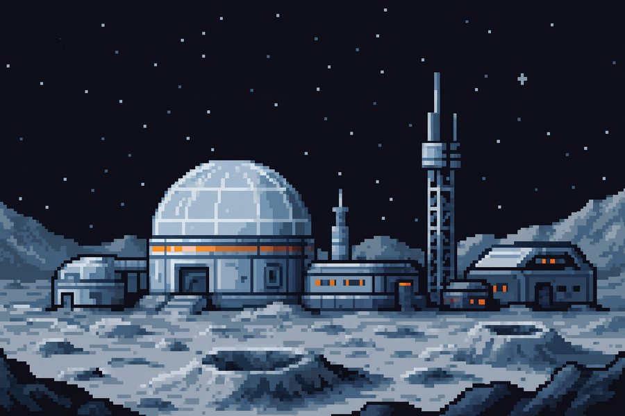
Inspiration: the Moon Mission pack's base
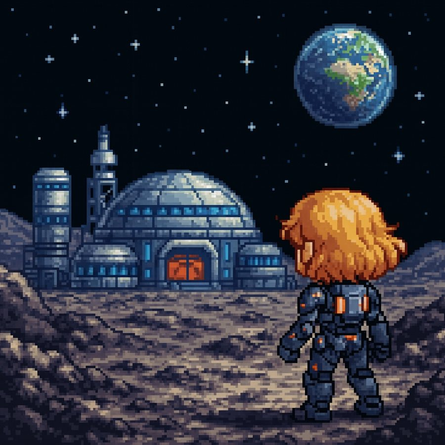
Abbie at the base: the scale we build for
The 20, built
Left: the three-quarter view. Tap "Spin it" to turn the real model. Right: what Abbie sees from her own eye height, which is the view that matters in first person. These were drawn in Blender tonight because the Mac was offline; Midjourney proofs for all 20 are queued for morning, and round 2 rebuilds each piece against its pick from the same camera.
MK-001
Solar array wing
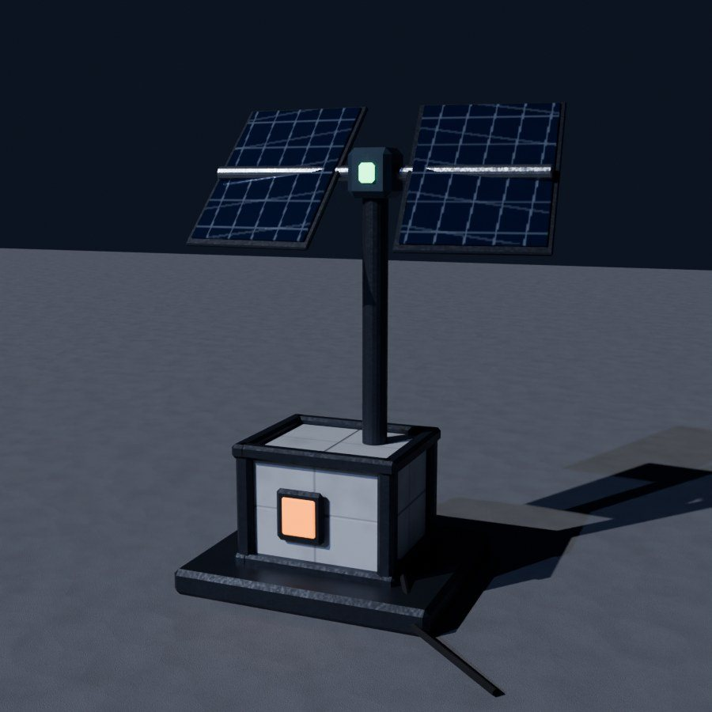
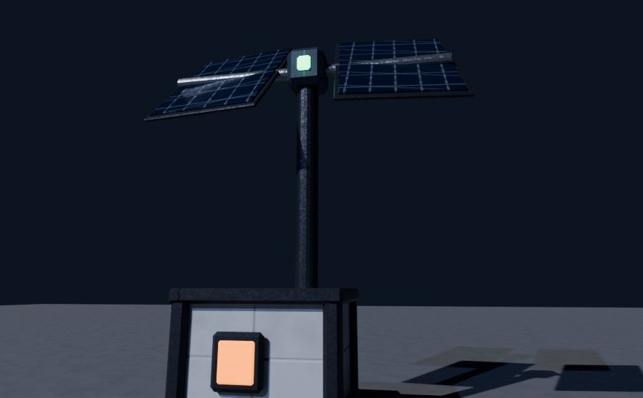
Abbie's eye, 1.1 m
A gunmetal mast on an anchored foot, a slewing head, a torque tube and two wings of four framed cells each, tilted to the low lunar sun. A junction box at the foot carries the green "power good" lamp (diegetic: if the base is short of power, these lamps go amber).
Triangles
2,096
Parts
39
Mass
1,852.0 kg
Moon weight
306.3 kg
Size m
8.92 × 2.37 × 3.95
Lamp GreenMetal CharcoalMetal GunmetalMetal HazardMetal HullDarkMetal SolarCellMetal SteelRubber Black
MK-003
Landing pad with beacon ring
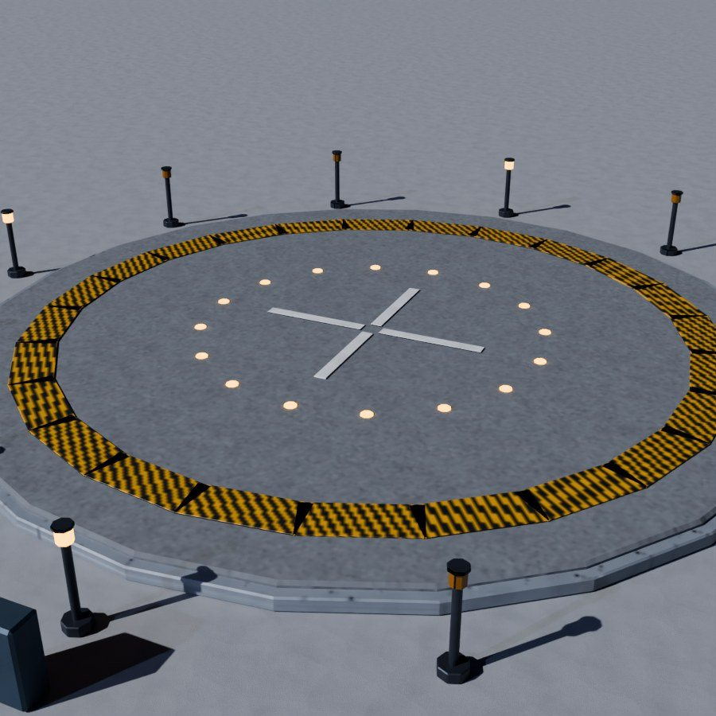
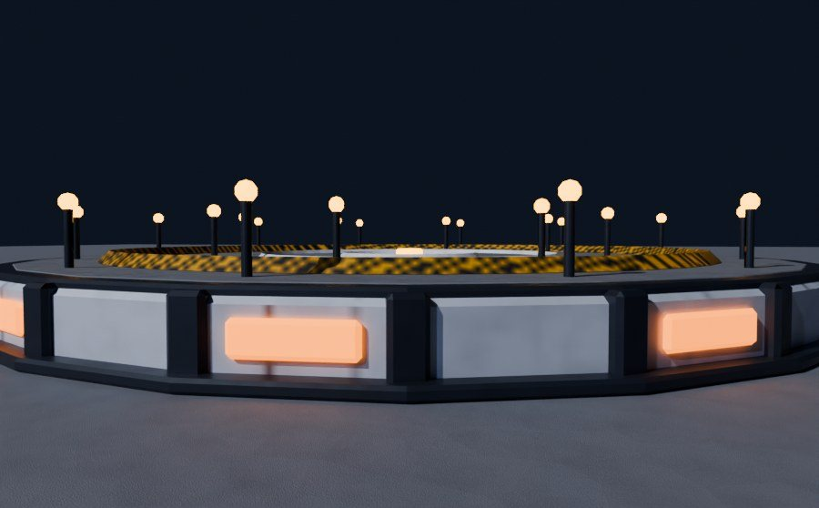
Abbie's eye, 1.1 m
A sintered-regolith slab 12 m across with a steel kerb, a painted hazard ring, a touchdown circle of amber inset lights and a ring of 12 beacon posts that chase toward the pad when a lander is inbound (the diegetic approach signal; this closes the remaster study's open beacon-ring item).
A 3.2 m dish on a yoke, a feed horn on three struts, a counterweight and a red blinker. It turns to follow Earth; when it is talking to home its feed lamp glows and the turntable hums.
A hopper you can tip dust into, a panelled furnace body on legs, a chute that drops bricks of sintered regolith onto a tray, an exhaust stack and a status lamp. Diegetic: the warm window glows while it cooks, the stack puffs slow low-gravity dust, and bricks pile up on the tray.
Three upright tanks on a steel skid, joined by a manifold with valve wheels and two big pressure dials. Diegetic: the dials' needles and the frost line on the tanks say how much air the base has.
Triangles
3,584
Parts
38
Mass
11,593.0 kg
Moon weight
1,917.5 kg
Size m
5 × 3.13 × 3.26
Metal GunmetalMetal HazardMetal HullMetal OxygenBlueMetal SteelPaint DialPlastic Dark
MK-031
Corridor segment, straight, ribbed
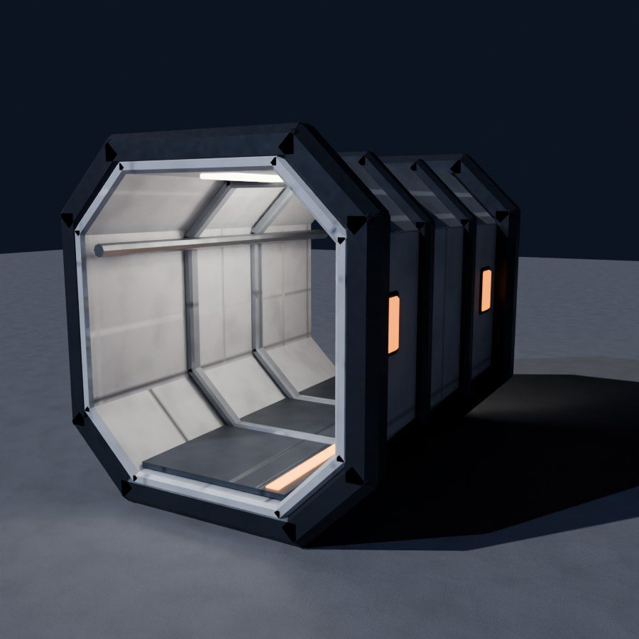
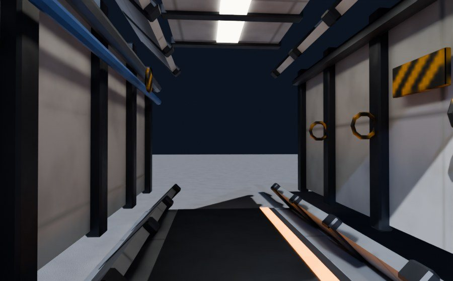
Abbie's eye, 1.1 m
The kit's base piece: 4 m long on the 2 m grid, 2.4 m wide, 2.6 m tall, with a chamfered octagonal section. Grated floor over a cable trough, hull wall panels, gunmetal ribs every metre with handholds for low-g, a pipe run on the left wall, a cable tray on the right, a warm light strip in the ceiling and painted wayfinding stripes on the floor (diegetic: follow the orange stripe home).
Triangles
2,588
Parts
62
Mass
13,533.8 kg
Moon weight
2,238.5 kg
Size m
2.48 × 4.16 × 2.67
HeadlightGlassMetal GrateMetal GunmetalMetal HazardMetal HullMetal HullDarkMetal OxygenBlueMetal SteelOrangeBandRubber Black
MK-035
Bulkhead door, round pressure hatch
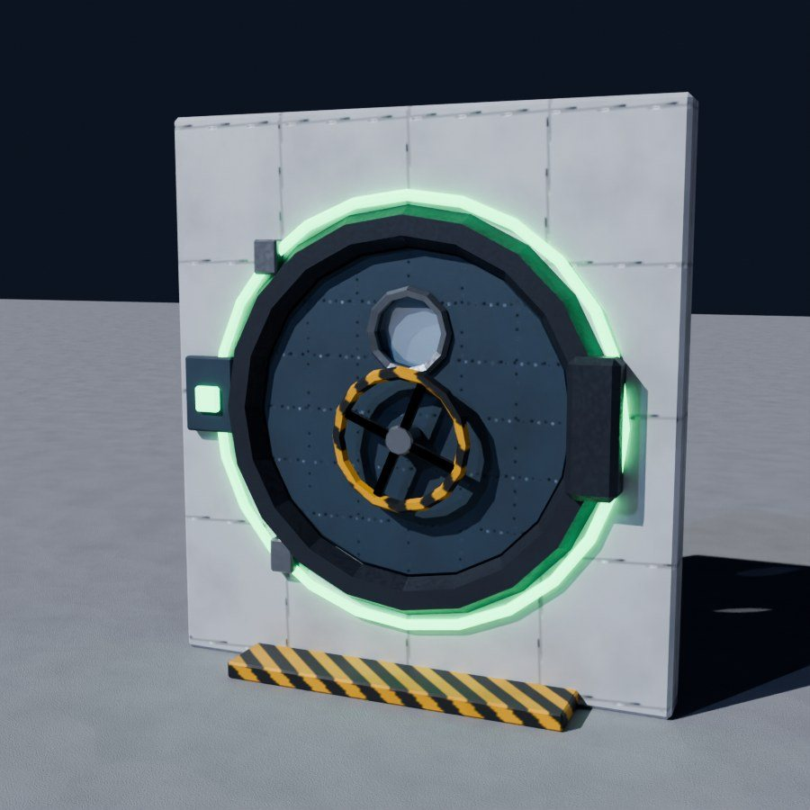
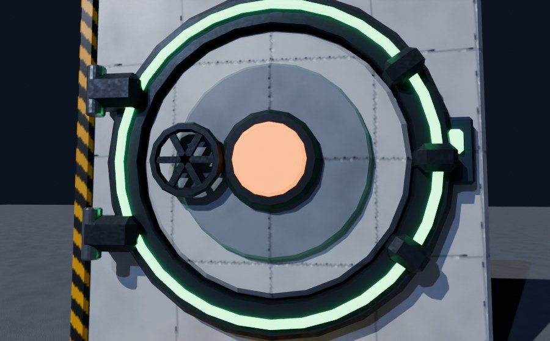
Abbie's eye, 1.1 m
A thick hatch with a porthole, a locking wheel, a hinge block and a door-state light ring round the frame: green means the next module holds air, amber means it is cycling, red means stop (diegetic: Abbie reads the ring, not a HUD).
A curved desk of three angled bays, each with an Earthlight screen on a tilting arm, a key deck with chunky buttons, and a fold-out step so Abbie can reach (adults stand, she climbs up).
Each has a mattress with a strap blanket (low-g: you sleep strapped in), a pillow, a reading lamp and a slatted shutter. Diegetic: a closed shutter with the lamp off means someone is asleep.
Triangles
1,992
Parts
40
Mass
2,423.4 kg
Moon weight
400.8 kg
Size m
2.28 × 1.16 × 2.39
Cloth BlueCloth GreyHeadlightGlassMetal GunmetalMetal HazardMetal HullMetal HullDarkMetal SteelOrangeBandPlastic White
MK-072
Galley table with bench
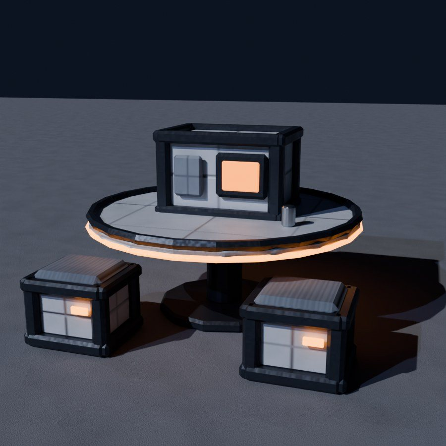
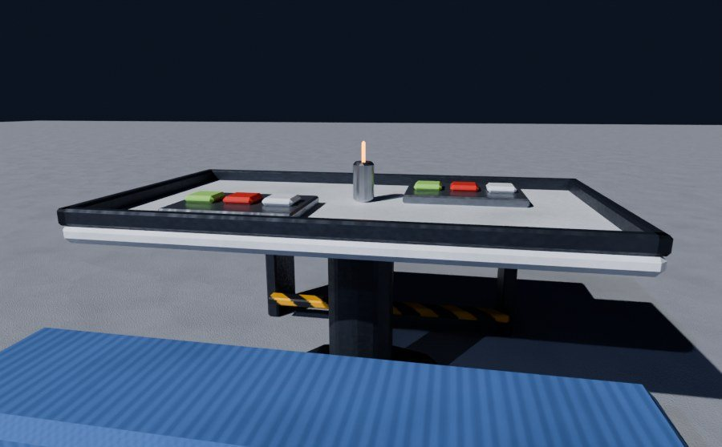
Abbie's eye, 1.1 m
A table on a single floor-pinned pedestal, a raised lip so things don't drift off in low gravity, two cushioned benches with foot straps, two magnetic meal trays and a drink pouch.
Triangles
1,392
Parts
27
Mass
651.5 kg
Moon weight
107.8 kg
Size m
1.6 × 2 × 0.98
Cloth BlueFruit RedLeaf LettuceMetal FoilMetal GunmetalMetal HazardMetal SteelOrangeBandPlastic White
MK-076
Hydroponics rack, three tiers
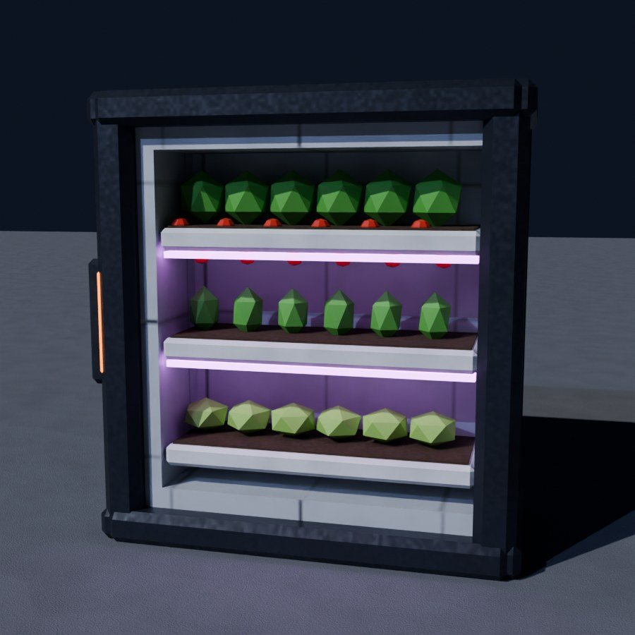
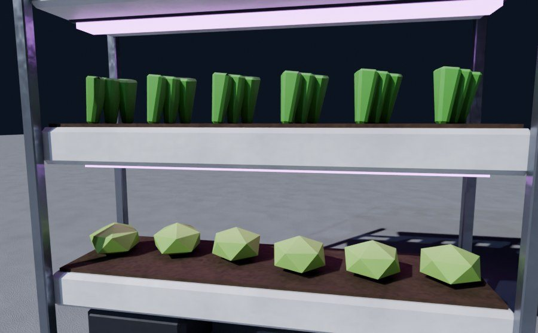
Abbie's eye, 1.1 m
Diegetic: plants droop and the lamps flicker when the water or power is low; ripe tomatoes mean it's harvest time.
A white cabinet with a glowing green plus (lit = ready), a pull-out drawer of plasters and suit patches, a fold-down seat at kid height and a big friendly press button. PG: it fixes scrapes and suit tears, nothing scary.
Triangles
932
Parts
19
Mass
560.7 kg
Moon weight
92.7 kg
Size m
2.35 × 0.79 × 2
Cloth BlueCloth GreyLamp AmberLamp GreenMetal CharcoalMetal GunmetalMetal HullMetal SteelOrangeBandPlastic White
MK-096
Crater rim arc piece
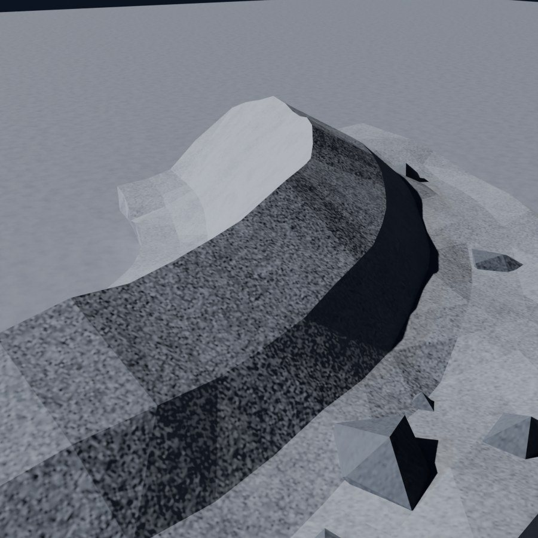
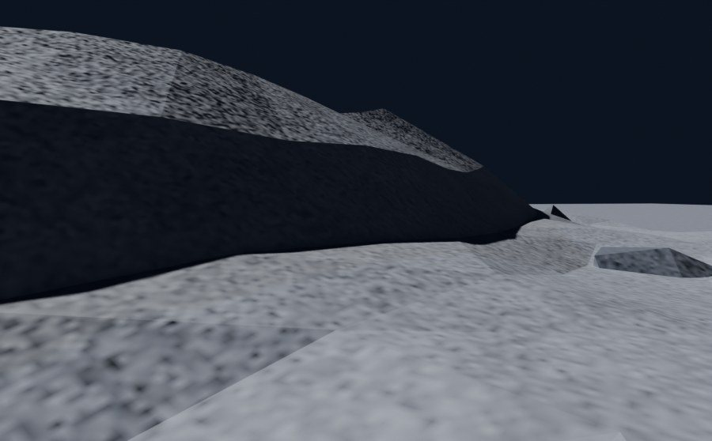
Abbie's eye, 1.1 m
Four of these close a crater; they also make low-g FPS cover. Colours follow the regolith grammar (simulations/moon/moon-regolith.mjs).
Triangles
1,096
Parts
10
Mass
111,268.6 kg
Moon weight
18,403.8 kg
Size m
13.19 × 13.22 × 2.99
Stone BasaltStone Regolith
MK-098
Boulder set (three)
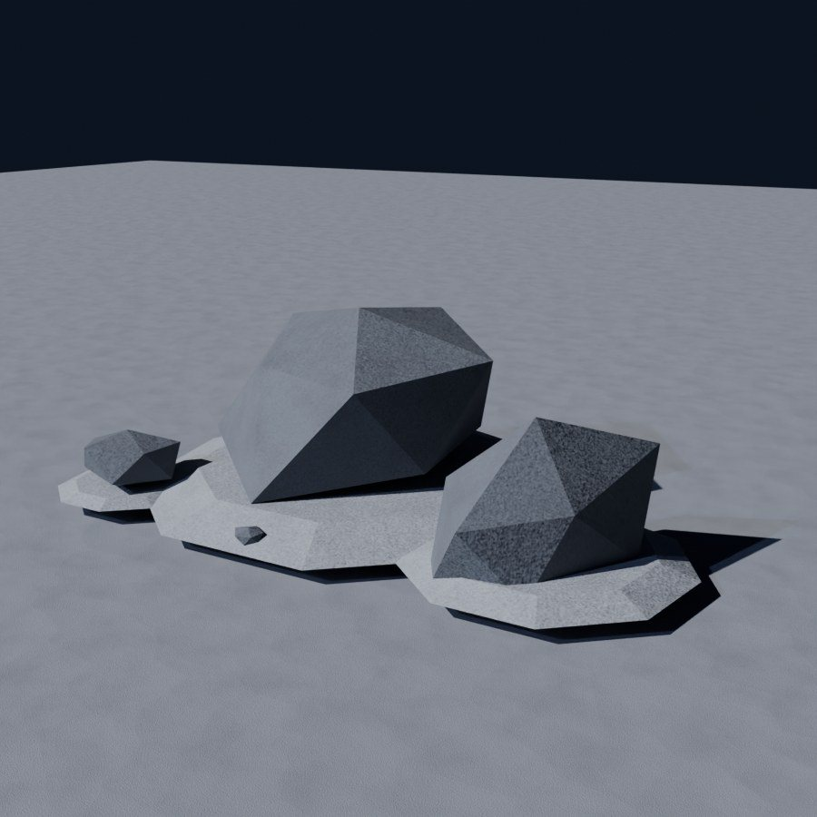
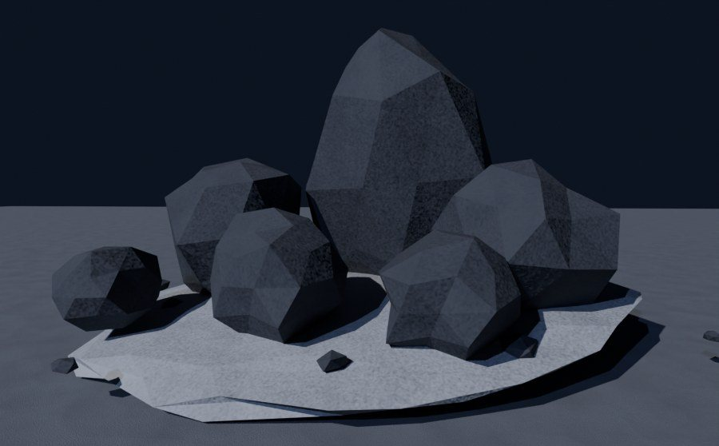
Abbie's eye, 1.1 m
Each has its own mass, so the small one can be shoved in low gravity and the big one stops a gem bug.
Triangles
276
Parts
12
Mass
11,995.2 kg
Moon weight
1,984.0 kg
Size m
4.96 × 3.41 × 1.54
Stone BasaltStone Regolith
MK-146
Oxygen canister
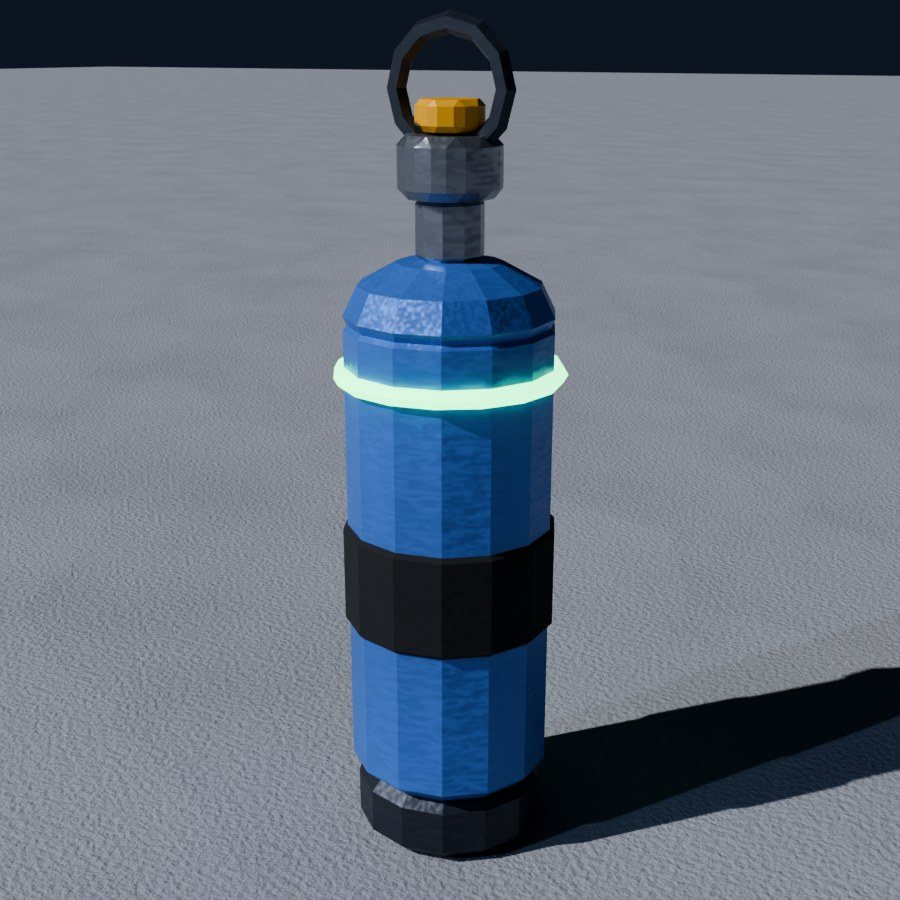
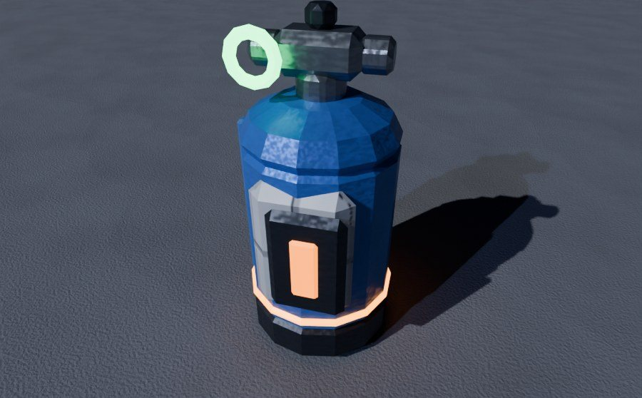
Abbie's eye, 1.1 m
A blue cylinder with a steel valve head, a rubber grip band, a carry loop and a green "full" lamp ring that the game dims as it empties (diegetic: the canister itself says how full it is, no HUD bar).
Triangles
1,124
Parts
9
Mass
13.9 kg
Moon weight
2.3 kg
Size m
0.2 × 0.2 × 0.72
Lamp GreenMetal GunmetalMetal HazardMetal OxygenBlueMetal SteelRubber Black
MK-147
Battery cell
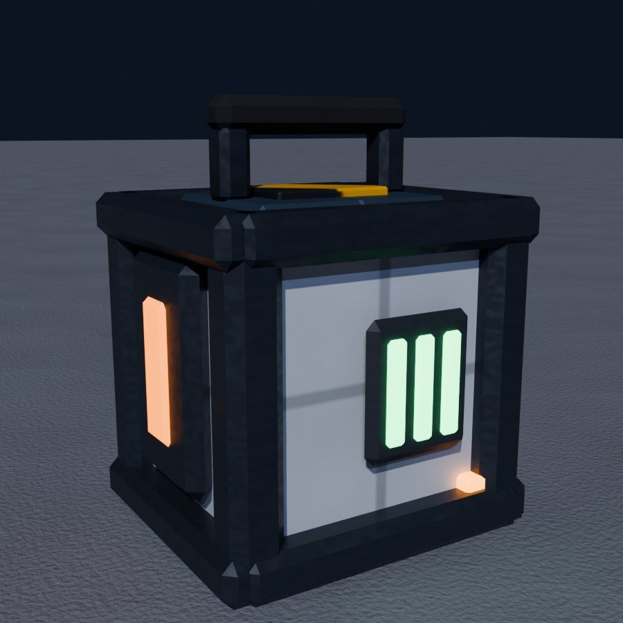
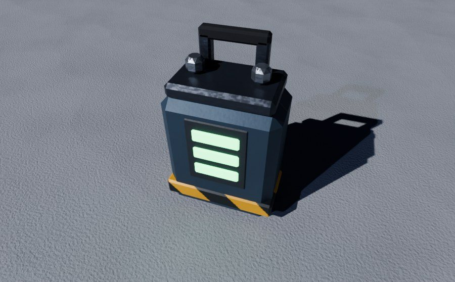
Abbie's eye, 1.1 m
A chunky charcoal block with a carry handle, steel contacts, a hazard band and three green charge bars on its side (diegetic: the bars say how full it is).
Triangles
624
Parts
12
Mass
54.0 kg
Moon weight
8.9 kg
Size m
0.31 × 0.19 × 0.49
Lamp GreenMetal CharcoalMetal GunmetalMetal HazardMetal SteelPlastic DarkRubber Black
MK-161
Status lamp beacon post
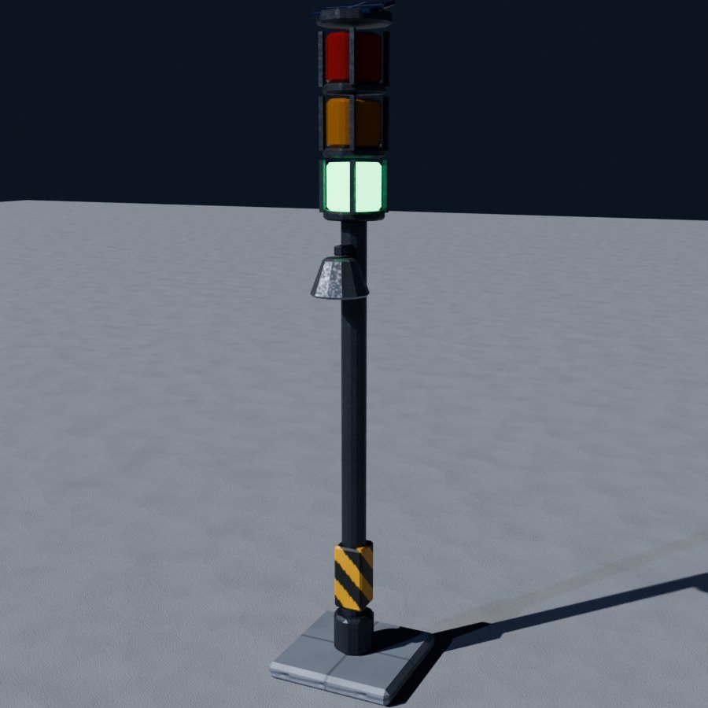
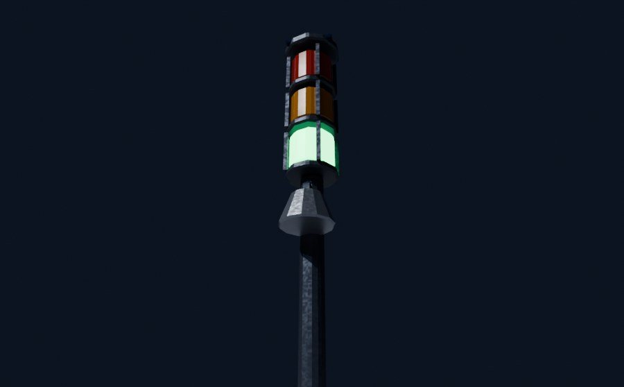
Abbie's eye, 1.1 m
Three caged glass lamps stacked on a post (green all's well, amber come back soon, red come inside now), a little solar cap and a bell under the lamps. The game lights one lamp and rings the bell, so the whole base mood is read from the world, not a HUD.
A 1.6 m round pad with a hazard-chevron grate top, a ring of green "ready" lamps, chunky springs visible in the gap below the top plate, and four anchor feet in a dust skirt. Step on it and the springs squash, the lamps chase inward, and you sail in a slow arc.
Orange ones are built. The groups are what a whole base needs, from the outside in.
Exterior structures and infrastructure 30
Dome, tower, habitat/hangar, airlock and supply crate were handed over by the Moon Heroes thread (2026-10-23): engineered recipes here, Meshy stays for heroes.
MK-001Solar array wing on a sun-tracking mast built
Machines read as machines: charcoal with role lights, never cyan.
MK-191Helper drone (camera)
MK-192Cargo hauler robot
MK-193Rover tow trailer
MK-194Robotic arm on a rail
MK-195Cleaning bot
MK-196Delivery capsule (lands from orbit)
MK-197Mini excavator
MK-198Crane boom
MK-199Forklift (low-g)
MK-200Mail rocket
How each piece is made
Parts that build the system. Every piece is assembled from named parts (Hatch, LockWheel, StateRing), so you can ask for a change in words, and the game can animate a single part.
Low poly, hero up close. Most pieces are 300 to 3,000 triangles with crisp chamfers. The detail lives in baked maps: base colour, roughness and normal, at 512 or 1024 px.
Material is meaning. Material names are game roles (Metal_Hull, Glass_Window, OrangeBand, Lamp_Green), and each role has a real density. So every part carries its mass in the model file.
The world tells you. Gauges, lamp posts, door light rings, charge bars and frost lines carry air, power and safety. The shooter can run without a HUD bar.
Built for Abbie's size. Everything is checked from 1.1 m eye height. Consoles have a kid step, and the lower bunk and the lettuce tier sit at her height.
Next
Midjourney proofs for the 20 come next, then round 2 against your picks. After that: the five base buildings the Moon Heroes study handed over (dome, tower, habitat and hangar, airlock, supply crate), and then placing the kit on the Moon tile for the shooter.